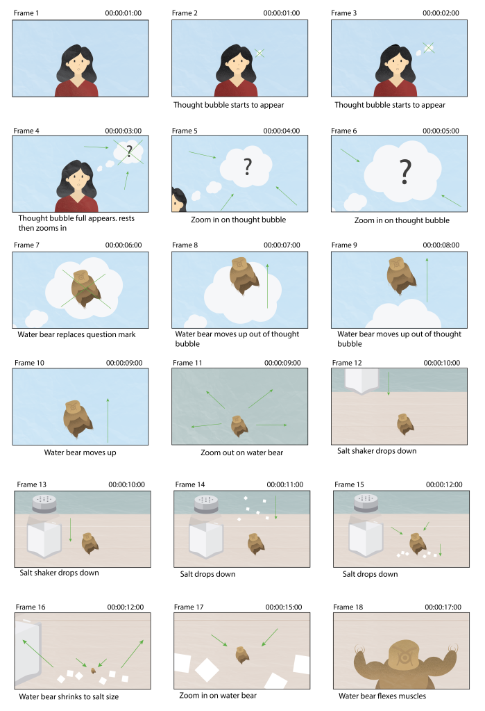
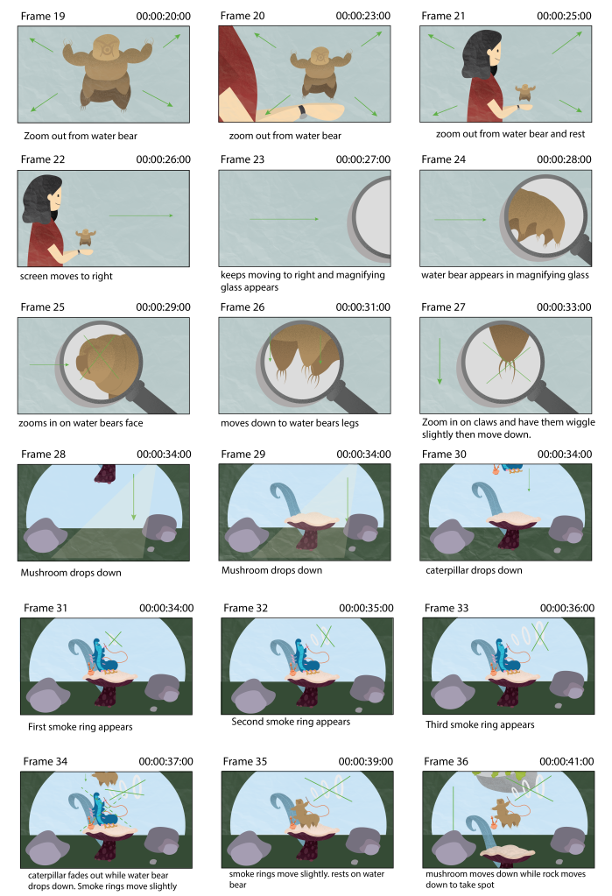
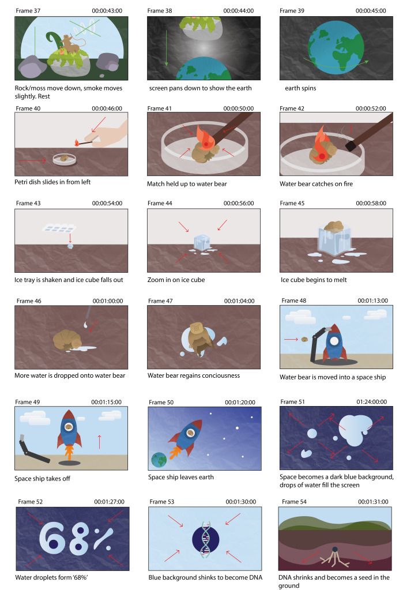
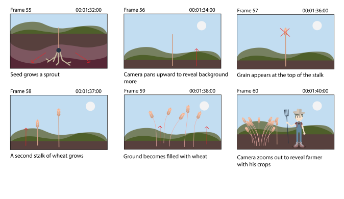
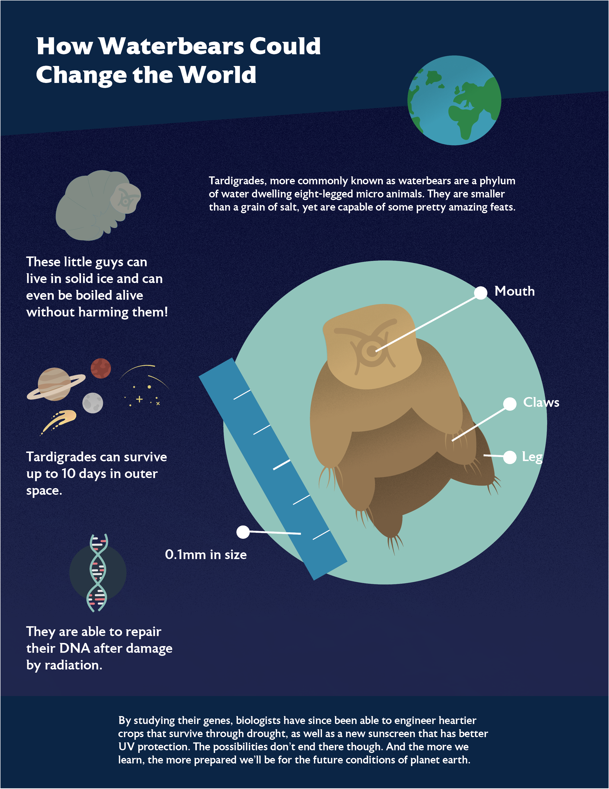

Water bears, also known as Tardigrades or moss piglets are microscopic organisms characterized by their fat bodies and wrinkly heads. They also have eight legs and hands with four to eight claws each. Despite being so small, they are arguably the pinnacle of evolution as we know it. These creatures are nearly indestructible and can even survive in outer space. There are also over 1000 subspecies of tardigrades, according to the Integrated Taxonomic Information System. Each can range from 0.05 mm to 1.2 mm in size and can be found just about anywhere. However, they prefer to live at the bottom of lakes, or on pieces of moss, hence the name ‘moss piglets.’ Research has shown that they can survive temperatures as cold as minus 328 degrees Fahrenheit or upwards of 300 degrees Fahrenheit. If that doesn’t blow your mind, some species can also survive in Earth’s orbit while being exposed to the vacuum of space and radiation. Thanks to all their adaptations, water bears are most likely to survive long after humanity is gone. Deadly asteroids, nearby supernovas, or bursts of gamma rays would mean nothing to them. To accomplish this feat, these creatures go into a death-like state called cryobiosis. Basically, they curl into a ball and drain their bodies of moisture, retracting their arms and legs. Once water is reintroduced, they come back to life! Reports from a 1948 experiment even claim that a water bear which spent 120 years in cryobiosis had been revived successfully, although this was an extremely rare event. The most recent feat was reviving a 30-year-old one, which happened in 2016. It seems there’s a lot to be learned from these little creatures. By studying them, we could make huge advancements in science and medicine. https://www.livescience.com/57985-tardigrade-facts.html The topic that got approved by our professor was the Water bears, and a title suggestion was “Tardigrades: aka Water Bears” or something similar.
After recording and posting our script to D2L, the feedback we got from the class is that the topic was very interesting and the structure of our script was good but there needs to be more description as to what a tardigrade is. “Are they a mammal or are they part of this specific family of other animal?” While we do have a little bit of a description in the script, looking back I do think we could benefit from explaining what a tardigrade is a little better at the beginning. Of course once we add in the visuals for the video it will solve that issue a little, but overall we do need to include more descriptive information. Another critique we received was that the split audio was distracting and the person thought only one voice would be necessary.
The critique we received from our professor was that it was too long and needed to be closer to one minute. In order to make it shorter we should cut out some of the details. Additionally we should make the middle section stronger by having 3 main body topics. Lastly for the final voice over we should only have one person record it.
1. [00:00:08:00] Have you ever heard of a Tardigrade? Probably not. Tardigrades, or more commonly known as water bears, are a phylum of water dwelling, eight legged micro-animals.
2. [00:00:24:00] Despite being smaller than a grain of salt, these animals are almost indestructible and can even survive in outer space. If we want our species to survive as long as these guys, we should be paying close attention to how these tiny animals behave.
3. [00:00:42:00] Water bears are characterized by their wrinkly bodies and scrunched up heads. They have eight legs, each with four to eight claws. You could say water bears look very similar to the caterpillar from “Alice in Wonderland.” They like to live in damp environments, specifically those with moss, but are capable of living pretty much anywhere.
4. [00:00:59:00] In 1776, a biologist discovered these creatures, when exposed to temperatures as dangerous as minus 328 degrees and 300 degrees Fahrenheit would survive by curling into a dehydrated ball in a near death-like state called cryptobiosis. When exposed to water again, they would come back to life after only a few hours.
5. [00:01:13:00] In 2007 the European Space Agency tested a theory by launching dried up water bears aboard a satellite without any air supply or protection to see if they would survive. After ten days, they returned to earth and 68% of them were revived with nothing but water.
6. [00:01:30:00] By studying their genes, biologists have since been able to engineer heartier crops that survive through drought, as well as a new sunscreen that has better UV protection. The possibilities don’t end there though. And the more we learn, the more prepared we’ll be for the future conditions of planet earth.
We spent a few days working on our Visual Style for the project and these are the four different versions we came up with. This was our thought process and creations:
While developing our visual style, Hannah and I referenced her storyboard sketches because the majority of our animation will be based on hers. I also made a few sketches of my own to try and figure out what the graphics might look like in higher fidelity, as well as to figure out color schemes. Some looked good at first but later got changed in Illustrator. I did this planning in Photoshop before committing anything to vector artwork. Hannah did something similar and sketched her first version in Procreate with different textured brushes before finishing in Illustrator. While experimenting, we both used subdued color palettes and loose, rounded shapes with subtle shading. Some of the textures we used included grain and paper which give the illustrations a similar aesthetic to a children’s book. While our styles are very different, we took many of the same things into consideration. Some graphics are going to be used in the same scene and should be designed with compatibility in mind. For example, Hannah created a meteor, the earth, and a night sky which all have compatible colors and are separate so they can be moved independently. My technique was to choose a palette for each scene and create objects and characters that would later be placed inside. Objects that will be used in multiple scenes or on their own are placed against a white background, such as the salt shaker and ice cube.
For this week, the goal was to start the initial digital storyboard frames. We only had to make 4 frames, so we were to focus on the key graphic elements or scenes with lots of detail.
Each of us created two different scenes. We wanted to cover the majority of our topics, so we picked out four scenes that were the mostly unrelated in order to make sure everything would match up. The first image takes place when the video is describing what water bears look like. Since we already had a pretty good idea of what the water bears will look throughout the video, I wanted to focus in more on the details about them rather than their overall look. The second image shows how a majority of the space scenes will look like. Our third image is of the experiment done with water bears. Since they’re so small we needed to find a good way to show them consistently throughout the various steps of the experiment. Our last image relates to how water bears helped improved crop sustainability so we went with this frame because a lot of scenes will be taking place with wheat/farmland, so this image included everything pretty well.
The feedback we received from our peers in regard to our initial motion design was the fire that was on our water bear was the strongest part of the animation. The way it moved/flickered worked really well and should tried to be applied to when the fire is on the match. The petri-dish blended in a little too much with the background. When it came to the ice cube tray it looked a little out of place because there was a hand holding the match but nothing holding the tray. We could try to add in a hand for the tray to make things a little more consistent. We should also consider having the water bear more apparent within the ice cube, so the viewer understands what they are looking at. Additionally, the ice cube looked really small on the table so maybe zoom in more or scale the ice cube to be a little bigger. The feedback we received from our professor was that the dialogue didn’t make much sense because it randomly started with lighting the water bear on fire. However, I think that once the rest of the video is animated it would make more sense, since this is only a 10 second clip. The tray needs to slide more naturally, use ease in and out if not used already. He also mentioned other things our peers had mentioned such as having a hand hold the ice cube tray and having the flames flicker on the match. He said not to scale and squeeze the flame when it is on the water bear.
Below are the completed storyboards for our explainer video on water bears. Previously, some of our frames had backgrounds and others didn’t. To remedy this, I chose a solid color for each scene and then added detail in the form of surrounding objects and subtle textures. Based on feedback from our last submission, we also worked on our consistency. We both worked on separate Illustrator documents to begin with, but then compiled everything into one and talked about how we could make our illustrations more similar. Being able to see everything side by side really made the process a lot easier. Hannah also shared her textures with me so that we could use the same ones throughout the entire project. A common complaint about our storyboards at 50% completion was that some appeared very flat. The textures have helped a lot with this. After all the textures were applied, we went back in and added shadows and gradients to give the illustrations more depth.
   As an additional project, I created an infographic which summarizes facts covered in the animated video.
